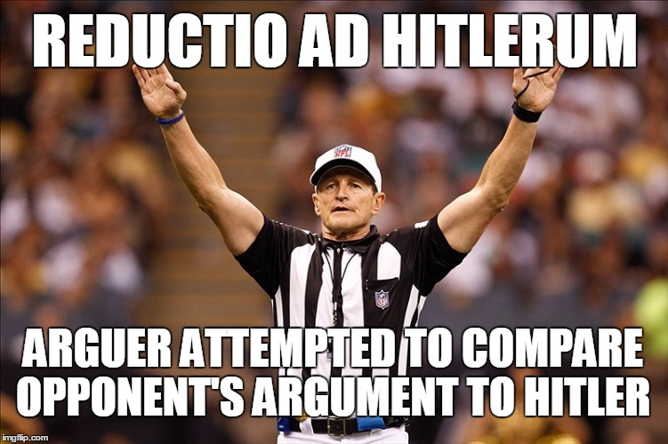

Godwin's law is an Internet theory that was created in the early 1990s by an American attorney named Mike Godwin. Godwin's Law states that "as an online discussion grows longer, the probability of a comparison involving Nazism or Hitler approaches one." In other words, the longer an online discussion thread gets, the more likely it becomes that someone compares someone or something to Hitler or Nazism. (via Wikipedia).
"I framed Godwin’s Law as a pseudo-mathematical probability statement, almost like a law of physics. I wanted to hint that most people who brought Nazis into a debate about, say, New York Gov. Andrew Cuomo’s views on gun control weren’t being thoughtful and independent. Instead, they were acting just as predictably, and unconsciously, as a log rolling down a hill." —Mike Godwin (via Washington Post)
What Godwin is getting at is that most references to Hitler and the Nazis are cop-outs that preclude the possibility of a more productive, meaningful discussion. To put it another way, bringing Hitler and the Nazis into an online conversation about something entirely unrelated is the digital equivalent of saying, "I know you are, but what am I?"
As the Internet has evolved, Godwin's Law has come to represent losing an argument. Once the Nazi reference has been made, Godwin's Law is "invoked" and the conversation is effectively over. In online forums like Reddit, comparisons or references to Hitler or the Nazis are met with memes like these that gleefully declare that the arguer has lost the argument.

Though these memes are humorous, the reality is that references like these can be harmful and toxic. If there is a lesson to be learned from Godwin's Law, it is that the likelihood of thoughtful conversation in a prolonged Internet discussion with many contributors decreases as the conversation drags on. The more comments are added, the more likely it is that someone will mention Hitler or the Nazis.
What happens as the comment thread grows?
See for yourself! Each square represents 50 comments.Green squares ( ) are positive, red squares (
 ) represent negative comments, and consecutive black squares ( ) signal that the conversation is over. These comments could contain references to the Nazis. What do you notice as you continue to click the button?
) represent negative comments, and consecutive black squares ( ) signal that the conversation is over. These comments could contain references to the Nazis. What do you notice as you continue to click the button?
The more you click the button, the more likely it is that a red, or negative, comment square will appear. This is what happens in online communities, where the combination of anonymity and an influx of contributors can quickly lead a conversation toward an invocation of Godwin's Law.
In real life, the speed with which Godwin's law is invoked depends greatly on the topic at hand. Mention Donald Trump on Facebook, and you may find your green squares turning red more quickly than if you post a picture of a kitten.Key Takeaways
As you engage in online conversations, remember these things:
- 1. Be thoughtful with your comments: Odds are, you're commenting on something online because it's something you care about, whether that's a sports team or a political issue. And, odds are you have something important to say. Don't fall prey to Godwin's Law and get slapped with a meme— think of other ways to get your point across than bringing Hitler into the equation. People will think you're clever for calling someone who obnoxiously corrects your grammar an "angry grammarian" instead of a "grammar nazi."
- 2. Watch out for trolls: Online forums make it easy to voice your opinion— they also make it easy to anonymously point fingers, spout conspiracy theories, and verbally abuse others without fear of reprisal. Be on the lookout for people who do this, also known as "Internet Trolls." These people lurk online and engaging them in extended conversation is unlikely to produce a positive outcome; when the conversation starts getting long, quit while you're ahead.
- 3. If you can, say it in person: Because of Internet Trolls, online forums like Reddit often are not the most effective way to engage with others or change minds. When a conversation thread begins to spiral out of control and involve too many people and comments, the likelihood that your points will be heard or internalized becomes increasingly slim. Bring these conversations offline by engaging with your friends and community. You have important things to say and, thankfully, Godwin's Law does not exist in-person (except, perhaps, at Trump rallies).
- 4. Find your favorite meme: Now that you know about Godwin's Law and the proper time to invoke it, put your knowledge to good use. If you thoughtfully make your point, and someone comes back at you with a Hitler reference, reply with your meme to let them know they've lost the argument. And then send them a link to this site :).